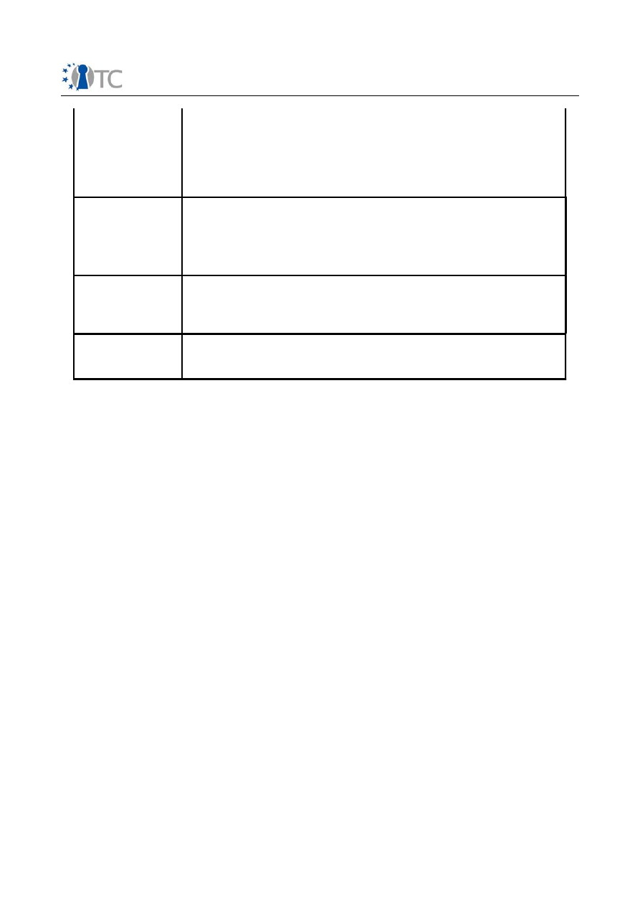

D10.4 Training Concepts and Training Plans
Project number
IST-027635
Project acronym
Open_TC
Project title
Open Trusted Computing
Deliverable type
Report
Deliverable reference number
IST-027635/D10.4/1.0 Final
Deliverable title
Training Concepts and Training Plans
WP contributing to the deliverable
WP10
Due date
Oct 2006 - M12
Actual submission date
30
th
November 2006
Responsible Organisation
RHUL
Authors
RHUL (Stéphane Lo Presti, Eimear Gallery,
Chris Mitchell), PORT (Bora Güngören, Baran
Erdo
ğ
an), TUB (Görkem Çetin), IAIK (Peter
Lipp), TEC (Klaus-Michael Koch, Sabine
Dullnig)
Abstract
This document introduces the training
concepts relevant to courses on (Open)
Trusted Computing, and presents the various
training plans devised by the project
partners.
Keywords
Training concept, training plan, trusted
computing
Dissemination level
Public
Revision
1.0 Final
Instrument
IP
Start date of the
project
1
st
November 2005
Thematic Priority
IST
Duration
42 months

Training Concepts and Training Plans
1.0 Final
Table of Contents
1 Introduction ...............................................................................................................3
2 Major Goals.................................................................................................................4
2.1 Professional training.............................................................................................4
2.1.1 Identification of the Target Audience.........................................................4
2.1.2 List of Major Course Goals..........................................................................5
2.2 Academic training.................................................................................................6
3 Training concepts.......................................................................................................8
3.1 Concepts related to Academic training.................................................................8
3.2 Concepts related to Professional training.............................................................8
4 Training plans...........................................................................................................17
4.1 PORT....................................................................................................................17
4.2 RHUL...................................................................................................................20
4.2.1 Course unit proposal..................................................................................20
4.2.2 Course specification...................................................................................23
4.2.3 Lecture plans...............................................................................................24
4.3 TEC......................................................................................................................34
4.4 TUB......................................................................................................................37
4.5 IAIK.....................................................................................................................38
5 List of Abbreviations ................................................................................................40
Open_TC Deliverable 10.4
2/40

Training Concepts and Training Plans
1.0 Final
1 Introduction
The OpenTC project has been set up with ambitious technical objectives. When
achieved, these objectives will improve the state of the art and enable a whole new
set of products and services to be built. If OpenTC is to be accessible to a general
audience, education on Trusted Computing in general and the OpenTC approach in
particular is important in order to ensure that this new technology is well understood.
Both academic and professional training will be completed in order to spread the
results of OpenTC to a wide audience, including open source developers, postgraduate
students, researchers, engineers and industrial executives. Training activities will take
a variety of forms, including workshops, university courses and/or on-line tutorials. The
training activities will also provide external feedback to OpenTC.
Europe is often credited to be a major and constant source of highly qualified open
source developers. This position derives from the relationship of European universities
to open source. Most, if not all, European universities encourage the use of, and
contributions to, open source software in higher education courses. Therefore
European universities can play an important role in communicating the results of the
OpenTC project to European open source developers.
All OpenTC training activities aim at delivering high quality and technically unbiased
information about Trusted Computing in general, and demonstrating the use of
Trusted Computing using OpenTC deliverables (specifications, designs and open
source code, where applicable). This document presents the major goals of OpenTC
training.
This document serves as a requirements specification for the training material to be
developed within the project. This specification first presents a list of seven Major
Course Goals (MCGs) and a larger list of 289 detailed Learning Objectives (LOs)
assigned to MCGs.
Secondly, the main concepts that are to be covered in OpenTC training courses are
presented. General concepts common to all courses are described, and concepts more
specific to academic or professional training are then given. These concepts are
presented as a general list of learning objectives that can be used as a checklist for
quality control of the training material in preparing instruction, examination, or
certification material related to OpenTC training.
Thirdly, the various training courses planned by OpenTC partners in the context of this
work package are described. Each partner has a different focus and a different target
audience, and providing these training plans demonstrates the diversity of ways that
the OpenTC partners have found to apply the learning objectives to their training.
Note that all deliverables in subworkpackage 10c, including this one, are released
under an Open Source or Creative Commons License, as stated by each contributor
individually.
Open_TC Deliverable 10.4
3/40

Training Concepts and Training Plans
1.0 Final
2 Major Goals
The goals of an OpenTC training activity have been devised in two main ways. First,
training for open source developers in a professional context has been analysed and
designed, and this work and the corresponding results are presented in section 2.1.
Secondly, integration of OpenTC training into university courses is taking place in
various partner institutions, and the specific goals of these courses are presented in
section 2.2.
2.1 Professional training
Examination of open source developer courses was conducted by PORT, including
UNIX/Linux development and security related courses in universities, professional
courses and workshops offered by training companies or professional associations.
The training material studied includes websites that were either open source or
without any license notification, as well as books on security and secure development.
This study has shown that, contrary to common belief, most open source developers
lack common knowledge in secure application design and development. Therefore
training material aiming at the majority of open source developers should either
explain or make reference to basic principles, methods and technologies of secure
development, where necessary. On the other hand, developers with even minimal
experience in secure development do not have problems in explaining and correctly
applying most basic functions such as performing certificate operations, using hashes
to check file integrity or using Linux process mechanisms for authentication.
Note that this situation creates a widening gap in application development, as most
low level code and libraries developed in the open source domain are designed and
implemented securely, but security-related bugs increase statistically because high
level developers often do not use even the most basic designs in security.
The lack of good training material further widens this gap. Most open source
developers demand precise training material than can be quickly understood. They
typically prefer to learn through real life examples, so as to to understand the need for
the technology, and then find a generic source code sample that addresses the
problem. As more advanced subjects in security are hard to express in this manner,
there is often no information publicly available on these topics that developers can use
in practice. More advanced topics are covered mainly in books or on some websites.
The majority of these resources are not easily accessible to open source developers,
and they further assume that the intended audience has knowledge and experience
about elementary and some advanced topics on security. With this assumption in
mind, the material is prepared so that intended audience does not spend time learning
the basics and jumps straight into the subject. However, this ignores the needs of the
typical open source developer and leaves him with the task of learning the basics on
his own. As a consequence, this widens the knowledge gap between those who can
use the material and those who can not.
2.1.1 Identification of the Target Audience
In order to appeal to most open source developers and keep duplication of work to a
minimum, we have identified the following type of audience for the training materials
Open_TC Deliverable 10.4
4/40

Training Concepts and Training Plans
1.0 Final
to be developed later in the project:
●
Inexperienced open source developers that want to learn about basic security
and how to achieve it using Trusted Computing. The focus here is primarily on
hardening existing systems by use of the TPM/TSS. What these developers
often need is sample source code in C/C++, and also instructions on how to
build and link this code with common library dependencies. Note that it is
possible to have a number of environments with different sets of library paths in
Linux, and thus even compilation, packaging and installation of such code can
be problematic.
●
Experienced security developers that want to learn about the enhancements
Trusted Computing brings. These developers want to see more advanced
methods in securing applications, and they will often apply them to their
existing applications. They might even have prior experience with using
TPM/TSS, but they will be interested in using OpenTC deliverables such as the
Basic Management Interface or the Privacy CA.
Therefore the OpenTC course goals, presented in the next section, have been
designed to accommodate the needs of these two types of audience. Training material
for major goals that correspond to basic knowledge of Trusted Computing will be
developed in a style adapted to the first type of audience.
2.1.2 List of Major Course Goals
The following list of seven Major Course Goals (MCGs) have been specified to give a
high level overview of the objectives that an OpenTC training course should achieve.
MCG 1. Explain what Trusted Computing is using TCG definitions.
The audience should first learn how to define security and under which conditions it
can be defeated, while being able to classify these aspects with respect to hardware,
OS and application software. Building upon this classification, they will learn what
cryptography can offer in order to enhance security, and use OpenSSL and certificates
to implement it. This background will then be used to define what Trusted Computing
is, and to define major components of a TC-enabled environment, such as an
endorsement key, TPM sealing, Direct Anonymous Attestation (DAA) or enforced
policies.
MCG 2. Understand and use in practice existing TPM and TSS
implementations for designing and developing applications.
The audience will learn the properties of a trusted platform in detail, and how to use
all the basic TPM features. Furthermore they will be able to elaborate on the features
of versions 1.1 and 1.2 of TPMs, installing and using TPM drivers and related software
on Linux. This will include features such as RTM based measurements and using these
measures, key migration issues, correctly placing the TPM in a complete trusted
platform implementation including hardware, software and the networked
environment, setting up the the trusted platform itself, and reference source code
functions such as those in the TPM Tools package.
MCG 3. Describe the goals and objectives of the Open Trusted Computing
project by using the public specification (D02.1), plus updates and related
source code deliverables.
Open_TC Deliverable 10.4
5/40

Training Concepts and Training Plans
1.0 Final
The audience will understand what the OpenTC project is aiming to achieve at the low
level of the infrastructure, and how the project results can be used to enhance the
security of individuals and corporations. The audience will first learn the basic goals of
the project and the common fears of Trusted Computing that have been witnessed by
the general public. Once the virtualisation approach of OpenTC is understood in detail
(i.e. the VM hosted security services model, enhancements to the x86 architecture,
SOAP interfacing to the TCS, runtime protection and isolation of OS instances) the
audience will evaluate the three application scenarios chosen for demonstration of the
Open TC results. Note that this Major Goal covers and makes detailed use of the public
deliverables of WP02-05.
MCG 4. Describe and demonstrate use of the Basic Management Interface
(BMI) by using the public specification (D04.1), plus updates and related
source code deliverables.
The audience will analyse and understand the boot sequence of virtualised OS
instances, and be able to discuss how additional security-related features can be
incorporated into a virtualisation abstraction. Furthermore they will be able to use the
BMI.
MCG 5. Evaluate an everyday application (e.g. Office Suite, Email) for
security issues and design an improved version using OpenTC deliverables.
The security of a common application will be evaluated. Then the procedure to
evaluate an application will be shown on an example of typical software (e.g. the
kwrite text editor). The audience will be then guided in the preparation of a short
specification for an improved version that uses OpenTC deliverables.
MCG 6. Evaluate a security related application (e.g. DRM, Firewall) for
security issues and design an improved version using OpenTC deliverables.
The security of a security application will be evaluated. Then the procedure to
evaluate an application will be shown for a typical piece of secure software (e.g. the
iptables firewall). The audience will be then guided in the preparation of a short
specification for an improved version that uses OpenTC deliverables.
MCG 7. Demonstrate the use of GPL'ed source base produced by OpenTC.
The audience will make use of OpenSSH and OpenSSL implementations modified for
TPM/TSS, and also proof of concept applications developed in WP06.
2.2 Academic training
Academic training deals with a rather different audience than that for professional
training. Moreover, the nature of teaching in an academic environment is very
different to the short-term focused training typically available in a commercial
environment. Therefore it needs to fulfill rather different goals. Graduate students
often have no significant prior knowledge of security when taking courses on security
or secure development However, as their work often includes a large amount of
research, they easily adapt and rapidly learn the necessary basics. Therefore when
given the appropriate resources, we can expect graduate students to develop secure
Open_TC Deliverable 10.4
6/40

Training Concepts and Training Plans
1.0 Final
code.
Graduate students have more diverse and sometimes very advanced objectives, such
as evaluating Trusted Computing based designs and implementations. Therefore they
will not only have to cover the subjects covered for developers in the previously
described professional training, but also possibly design and implement a small proof
of concept with very advanced design as part of thesis work.
The goals of such an OpenTC training course include:
•
Provide a basic introduction to trusted computing;
•
Discuss how trusted computing ideas might assist with the future development of
secure systems;
•
Describe the basic hardware and software technologies underlying trusted
computing;
•
Give an appreciation of how virtualisation and isolation, with appropriate hardware
support, can provide a trusted environment in which to run sensitive applications;
•
Discuss possible applications of trusted computing technology.
Open_TC Deliverable 10.4
7/40

Training Concepts and Training Plans
1.0 Final
3 Training concepts
Every OpenTC training course should address basic information security concepts, the
underlying Trusted Computing technology, and the OpenTC approach.
In educational theory, learning occurs only when a behavioural change (mostly
psychomotor or cognitive) is observed. We can thus define any educational application
in terms of the expected changes in behaviour. It is common practice to provide lists
of such expected changes. These lists are not simple lists of topics to be covered in a
course, but they describe what the student should be able to do after the course. The
most commonly used terms for these are training concepts and learning objectives.
Training concepts or learning objectives describe student performance and hence can
also be used for assessment. As formal assessment is an important tool, course
designs should be tailored so that their results can be assessed.
In practice, these concepts are often related to exact skills, knowledge and attitude
(SKA) that the student is expected to gain. Professional training programs focus more
on skills than knowledge and attitude, whereas academic training programs want to
achieve higher levels of cognitive learning such as synthesis and evaluation of
concepts. Therefore, concepts developed for professional courses have a large
number of narrowly defined, to-the-point entries and academic objectives are
expressed in broader terms.
The training concepts which may be adapted to academia are first described, followed
by concepts more tailored towards professional training.
3.1 Concepts related to Academic training
Depending on the subject of the academic degree where the OpenTC training is
taught, an introduction to the basic principles of computer security and possibly
cryptography may be necessary.
An OpenTC training will probably introduce the history of trusted computing, notably
the one of the TCG, and possibly concludes the training with a description of some of
the non-technological elements (software license, socio-psychological trust, public
acceptance of the technology, etc.).
With regards to the technological elements of the training, on successful completion of
an academic course students should be able to:
•
understand the fundamental principles behind trusted computing;
•
work with the TCG specifications;
•
have an appreciation of the range of possible trusted hardware and software;
•
understand what trusted computing can do to improve system and user security
(and what it cannot do);
•
understand the OpenTC approach and be able to compare it to other approaches;
•
analyse and assess possible applications of trusted computing.
3.2 Concepts related to Professional training
MCG 1. Explain what Trusted Computing is using TCG definitions.
Open_TC Deliverable 10.4
8/40

Training Concepts and Training Plans
1.0 Final
LO 1. Define the security of a system.
LO 2. Define a security violation or a flaw.
LO 3. Explain some hardware security flaws.
LO 4. Explain some software security flaws.
LO 5. Explain general attack methods with respect to software and hardware security
flaws.
LO 6. Define the terms "trust" and "trustworthy" with respect to general security
concepts.
LO 7. Present the definition of Trusted Computing given by the TCG.
LO 8. Explain how Trusted Computing contributes to security at large.
LO 9. Explain the four key concepts of Trusted Computing.
LO 10. Present the endorsement key and describe its usage and logic.
LO 11. Explain the necessity of the secure I/O channels by using examples such as key
loggers.
LO 12. Explain how memory curtaining and memory isolation in virtualisation could be
achieved by cryptographic means.
LO 13. Explain how Trusted Computing would contribute to memory curtaining.
LO 14. Define the terms "sealed" and "secured" for memory related issues.
LO 15. List software and hardware based methods for encryption in data sealing.
LO 16. Present "remote attestation" using a client-server application scenario
LO 17. Define “privacy”, “anonymity” and discuss their legal and ethical necessity.
LO 18. Describe how anonymity can be implemented.
LO 19. Debate over anonymity and attestation.
LO 20. Present DAA.
LO 21. Define Digital Rights Management (DRM) and show a number of potential uses.
LO 22. Debate over the moral issues around DRM.
LO 23. Explain how DRM could be achieved without major ethical problems.
LO 24 .Define identity theft and list a number of examples.
LO 25. Explain how identity theft could be prevented.
LO 26. Define "viruses" and "worms" and explain how they work by using recent
examples.
LO 27. Explain how Trusted Computing could prevent the spreading of viruses and
worms.
LO 28. Define biometrics and list a number of biometric attributes.
LO 29. Debate of the use of biometrics in security.
LO 30. Explain the necessity for protecting biometric data and how Trusted Computing
can help.
LO 31. Define the terms "platform" and "trusted platform" using the TCG
specifications.
LO 32. Explain the need for layered designs in implementing trusted platforms.
LO 33. Define the term "root of trust".
LO 34. Explain why more than one root of trust can be necessary for practical reasons.
LO 35. Define a Trusted Platform Module with respect to a generic trusted platform.
LO 36. Define a Trusted Platform Module with respect to TCG specifications.
LO 37. List the features of a TPM v1.1.
LO 38. List the additional features of a TPM v1.2.
LO 39. Explain the cryptographic capabilities and limits of a 1.2 TPM.
LO 40. Explain how the TPM is used for cryptographic key management.
LO 41. Define the term "enforced policy" and list a number of potential uses.
LO 42. Describe a number of ways on how enforced policies could be implemented.
Open_TC Deliverable 10.4
9/40

Training Concepts and Training Plans
1.0 Final
LO 43. Define and compare "hard" and "soft" enforced policies.
LO 44. Define "access control" and the existing ACL implementation of Linux.
LO 45. List access control issues with respect to Trusted Platforms.
LO 46. Describe how a complete electronic voting mechanism could be implemented
using concepts and techniques utilizing Trusted Computing such as anonymity,
attestation, access control, and enforced policies.
MCG 2. Understand and use in practice existing TPM and TSS
implementations for designing and developing applications.
LO 1. Define the key concepts of a trusted platform.
LO 2. Describe a number of root of trust mechanisms.
LO 3. Describe how the RTM takes measurements.
LO 4. Explain how the RTS enables trusted storage.
LO 5. Explain how the RTR handles reporting.
LO 6. Compare the CRTM with the RTM.
LO 7. Define the all NV functional structures in the TPM.
LO 8. Explain which values are kept in the PCRs.
LO 9. Compare the TRNG with OS random number generator.
LO 10. Present the key generation capabilities of a TPM v1.2.
LO 11. Present a cryptographic co-processor engine with respect to engines in a TPM.
LO 12. Compare a cryptographic accelerator with a TPM from the application
developer's point of view.
LO 13. Explain how HMAC is used in a Trusted Platform.
LO 14. Explain the importance of the power state of a TPM chip.
LO 15. Compare key migratability and non-migratability.
LO 16. Evaluate an application scenario where keys should be migratable.
LO 17. List the basic set of keys inside a TPM.
LO 18. Describe the key hierarchy in a TPM.
LO 19. Present the SRK with respect to data and key protection.
LO 20. Define endorsement, platform and conformance credentials.
LO 21. Explain AIKs and their credentials.
LO 22. Explain DAA.
LO 23. Compare AIK and DAA with regards to privacy.
LO 24. Define the TSS.
LO 25. List the TSS Layers and their complementary behavior with respect to the TCG
design.
LO 26. Present the high level TSS Layer Hierarchy.
LO 27. Define the interaction between the TDD and the TCS.
LO 28. Elaborate on why we should use TSPI for application development.
LO 29. Define the entities involved in the TP from the end-user point of view.
LO 30. Define authorization and privilege techniques.
LO 31. Compare physical presence and cryptographic authorization in terms of
demonstrating privilege.
LO 32. Define and compare the OIAP and OSAP protocols.
LO 33. Explain how to change authorization data.
LO 34. Define and compare AACP and ADCP protocols.
LO 35. Explain the initialization of the TPM using pseudo-code.
LO 36. Explain how to enable the TPM using pseudo-code.
LO 37. Explain how to take ownership of the TPM using pseudo-code.
LO 38. Explain how to clear the TPM using pseudo-code.
Open_TC Deliverable 10.4
10/40

Training Concepts and Training Plans
1.0 Final
LO 39. Compare data sealing, data binding and data wrapping.
LO 40. Define transport security and session establishment with a TPM. Define a
Monotonic Counter.
LO 41. Define a Context Manager.
LO 42. Draw the schema of a simple Trusted Platform.
LO 43. Present trusted platform architectures such as NGSCB, Nizza and OpenTC.
LO 44. Describe how to setup a Trusted Platform.
LO 45. Describe functionalities and commands of TPM Tools.
LO 46. Demonstrate activating and taking ownership of the TPM with TPM tools.
LO 47. Describe the interaction of the layer interfaces between TSS API.
LO 48. Describe TDDLI in detail, including its programming logic.
LO 49. Describe TCSI in detail, including its programming logic.
LO 50. Describe TSPI in detail, including its programming logic.
LO 51. Present how to program using Trousers TSS API.
LO 52. Describe the programming logic of the TSS.
LO 53. Describe common TSPI functions.
LO 54. Explain how the context manager works.
LO 55. Define the policies.
LO 56. Present the different types of object.
LO 57. Describe TSPI common return codes.
LO 58. Describe important TSS structures like TSS_PCR_EVENT, TSS_UUID.
LO 59. Demonstrate how to initialise and create objects from a context using the TSPI.
LO 60. Explain attributes and flags of the related objects.
LO 61. Demonstrate getting and setting the attributes of the objects.
LO 62. Explain functional classes of the objects.
LO 63. Demonstrate how to get the TPM object of the system via a context.
LO 64. Demonstrate getting and setting TPM properties.
LO 65. Demonstrate how to get the endorsement key of the TPM with an application.
LO 66. Explain key generation and usage of the SRK.
LO 67. Describe a UUID.
LO 68. Describe how to load or get keys from Trusted Storage.
LO 69. Describe data sealing and binding in an application.
LO 70. Explain the usage of Tspi_ChangeAuth and Tspi_ChangeAuthAsym.
LO 71. Present the Tspi_Policy class.
LO 72. Present the Tspi_TPM class.
LO 73. Present the Tspi_Key class.
LO 74. Present the Tspi_Hash class.
LO 75. Present the Tspi_Data class.
LO 76. Present the Tspi_PcrComposite class.
LO 77. Describe Tspicb callback function definitions.
LO 78. Examine TPM Tools source code.
LO 79. Describe TCS architectural properties like memory manager, data marshalling
and interface dynamics.
LO 80. Describe the architecture of TDDL.
LO 81. Draw a high level TSS hierarchy diagram with respect to local and remote
procedure calls.
MCG 3. Describe the goals and objectives of the Open Trusted Computing
project by using the public specification (D02.1), plus updates and related
source code deliverables.
Open_TC Deliverable 10.4
11/40

Training Concepts and Training Plans
1.0 Final
LO 1. Describe the goals of the OpenTC project.
LO 2. Elaborate on whether an OS supplier could take control on installation of
software with or without cooperation from the owner of the computer.
LO 3. Discuss technical aspects of Linus Torvald's and Richard Stallman's positions on
Trusted Computing.
LO 4. Discuss the virtualisation approach of the Open TC project.
LO 5 .Describe briefly XEN and L4 virtualisation architectures.
LO 6. Define a virtual machine monitor (VMM) / hypervisor.
LO 7. Discuss how hypervisors can verify a trusted platform boot.
LO 8. Discuss how hypervisors can be used to enforce security policies on OS
instances.
LO 9. Describe a platform security kernel.
LO 10. Elaborate on the definition of a trusted computing base (TCB) for the case of
OS virtualisation.
LO 11. Elaborate on differences in the TCB between XEN and L4.
LO 12. Elaborate on implementing a TCB with Linux or Windows on XEN or L4.
LO 13. Present a diagram of the proposed VM-hosted security services model.
LO 14. Discuss the use of virtual TPMs and a separate TPM server.
LO 15. Describe the components and features of the hardware/virtualisation layer.
LO 16. Describe the components and features of the trusted software layer.
LO 17. Describe briefly the Basic Management Interface (BMI).
LO 18. Discuss the use of scripting tools and Java for the security kernel OS instance.
LO 19. Discuss key management issues for the VM-hosted security services model.
LO 20. Present current and discuss future TPMs and TC enhanced CPUs.
LO 21. Discuss the changes in the x86 architecture, with reference to the AMD Pacifica
specification.
LO 22. List the elements of secure initialization architecture provided by the SVM
guest execution environment.
LO 23. Discuss why secure initialization requires immutable hardware components.
LO 24. Discuss how a secure loader is measured and how this measurement is
extended to the TPM.
LO 25. Provide a basic list of secure software components for establishing a TCB on a
secure loader.
LO 26. Discuss the need for a Configuration Verification (CV) module and describe the
expected functionality.
LO 27. Describe how a TSS stack could be implemented.
LO 28. Debate over the need for a SOAP interface for the TCS.
LO 29. Describe the implementation of the SOAP interface.
LO 30. Describe the TCS persistent storage and how it can be used.
LO 31. Discuss the logical and physical cache strategies in a TSS implementation.
LO 32. Discuss error handling strategies in a TSS implementation.
LO 33. Define a PKCS#11 interface.
LO 34. Discuss how a PKCS#11 API can be implemented on a TPM/TSS.
LO 35. Discuss and compare key and certificate models in common applications.
LO 36. Discuss the benefits of designing a key management adaptation (KMA) module.
LO 37. Describe how OpenSSH could be adapted to use TPM/TSS.
LO 38. Describe how the OpenSSL core engine could be adapted to use TPM/TSS.
LO 39. Discuss and compare the Java security model to that of the OpenTC
architecture.
LO 40. Discuss whether Java would benefit from Trusted Computing and OpenTC.
LO 41. Describe the chain of trust for a Java Applet running on top of a TC-enabled
Open_TC Deliverable 10.4
12/40

Training Concepts and Training Plans
1.0 Final
Java VM.
LO 42. Describe the basic goals of hypervisor-based security architectures.
LO 43. Debate approaches for runtime protection and isolation of OS instances.
LO 44. Define the Trusted Computing Base (TCB) for the OS instances running on top
of hypervisors.
LO 45. Define the TVL and how it establishes the chain of trust.
LO 46. Describe the life cycle of an OS instance loaded by XEN/L4.
LO 47. Describe the security policies at the hypervisor level.
LO 48. Describe the layers of the OpenTC framework with respect to the management
services.
LO 49. Define the three types of management services developed within the OpenTC
project.
LO 50. Discuss the use of the management services by applications.
LO 51. Define the components of the OpenTC security services.
LO 52. Describe the functionalities of the Compartment Security Manager.
LO 53. Describe the functionalities of the Compartment Trust Manager.
LO 54. Describe the functionalities of the Storage Manager.
LO 55. Discuss how the Storage Manager is used by applications at higher levels.
LO 56. Define the OpenTC security management services.
LO 57. Describe the management of a TPM.
LO 58. Describe the security platform initialization.
LO 59. Describe how a user-initiated TPM migration takes place.
LO 60. Describe the key management services and infrastructure.
LO 61. Discuss and compare the use of a Privacy CA and DAA.
LO 62. Debate over the high level use case approach used in gathering OpenTC
requirements.
LO 63. Discuss the security measures for Internet branch and similar applications
provided by major banks.
LO 64. Discuss the private electronic transaction (PET) scenario of the OpenTC project.
LO 65. Compare the use of a trusted OS for private electronic transactions with the
use of a hardened browser on a legacy OS.
LO 66. Discuss the feasibility of banks supplying a Linux OS image based on the PET
scenario.
LO 67. Simulate and test the functional requirements of the PET scenario by assigning
roles among peers where each threat is tested.
LO 68. Discuss the use of security proxies for clients.
LO 69. Discuss the use of security proxies for servers.
LO 70. Discuss the establishment of the communication on the SSL/TLS channel
between each proxy.
LO 71. Describe a Data Center and the services offered by such infrastructure.
LO 72. Describe P2P and Grid technologies and their relationship to data center
operations.
LO 73. Describe how mapping virtual resources to physical resources can contribute to
the management complexity of data centers.
LO 74. List down privacy issues and common security threats in data center
applications.
LO 75. Discuss common threats and attacks on data centers.
LO 76. Discuss published security flaws on server applications that data centers
typically use.
LO 77. Describe how mapping virtual resources to physical resources can contribute to
the security complexity of data centers.
Open_TC Deliverable 10.4
13/40

Training Concepts and Training Plans
1.0 Final
LO 78. Elaborate on the concept of load balancing for higher performances and how
this could be achieved with virtualised resources.
LO 79. Discuss configuration management issues on a virtualised data center.
LO 80. Discuss network policy applications on a virtualised data center.
LO 81. Discuss how data center operators would benefit from networked servers for
verification and attestation of virtual/physical resources.
LO 82. Describe and compare the boot, hibernation and reboot processes of a
virtualised server instance to the one of a physical server instance.
LO 83. Discuss the differing levels of trust of the administrator roles on virtual and
physical resources.
LO 84. Draw a diagram of the virtualised data center scenario and show the trusted
path to the user.
LO 85. Discuss home officing, outsourcing, offshoring and similar activities which
result in employees being physically separated from employers and offices.
LO 86. Describe how complex workflow applications are designed to accommodate
cases such as territory management for sales representatives.
LO 87. Elaborate on the case of professionals such as medical doctors, lawyers and
consulting engineers who have to separate data of one client from the other because
of legal and ethical reasons.
LO 88. Discuss and verify that feasibility of the Corporate Computing at Home (CCH)
scenario for the mentioned job descriptions.
LO 89. Discuss how to configure and manage each trusted OS instance separately and
independently.
LO 90. Describe the trust relationship between two different trusted OS instances with
respect to confidentiality and integrity of data.
LO 91. Describe the trusted path between each OS instance and the corporate servers.
LO 92. Describe the process of booting up a new trusted OS instance.
LO 93. Describe the process of switching to another trusted OS instance.
LO 94. Compare the usability and security of the CCH scenario with existing VPNs and
workflow based applications.
LO 95. Simulate the threat scenarios to be considered for the CCH case by facilitating
a role play among peers.
LO 96. Look for a way that an employer would have for creating a malicious OS
instance that would access the other OS instances.
MCG 4. Describe and demonstrate use of the Basic Management Interface
(BMI) by using the public specification (D04.1), plus updates and related
source code deliverables.
LO 1. Describe the Basic Management Interface as a front-end hiding the specific
virtualisation technique used by the hypervisor.
LO 2.Describe the Basic Management Interface as a front-end for creating and
managing trusted OS instances.
LO 3. Describe the Basic Management Interface as a mechanism ensuring the integrity
of the overall system.
LO 4. Demonstrate the use of the libvirt open source library for creating a XEN
domain.
LO 5. Discuss the capabilities of libvirt and how they could be extended for security
purposes such as maintaining the integrity of OS intances.
LO 6. Present the list of hardware resources on a computer to a hosted OS intance.
LO 7. Present the XML schema for the Common Information Model (CIM) standard.
Open_TC Deliverable 10.4
14/40

Training Concepts and Training Plans
1.0 Final
LO 8. Describe the set of resources on a computer using a CIM document.
LO 9. Express a set of Access Control List (ACL) based policies on resources expressed
by a CIM document.
LO 10. Evaluate the proposed component and data model for BMI.
LO 11. Describe how the Basic Management Interface relies on the Trusted
Virtualisation Layer (TVL).
LO 12. Define the term "protection domain" and explain the difference with the term
"hosted OS instance".
LO 13. Describe the controller interface provided to a protection domain.
LO 14. Define the controlling relationship between protection domains with respect to
controllers.
LO 15. Discuss the types of connection between protection domains.
LO 16. Elaborate on how a trusted keyboard and mouse implementation would be
possible with the BMI.
LO 17. Elaborate on how a DRM Core would control access on sound or video devices
by utilizing the BMI.
LO 18. Discuss the integrity measurement of a set of protection domains.
LO 19. Describe the life cycle and configuration management for XEN.
LO 20. Describe the life cycle and configuration management for L4.
LO 21. Discuss XEN and L4 Interoperability.
LO 22. List the steps of a traditional OS boot sequence.
LO 23. List the steps of a static root of trust measurement during boot with XEN and
L4.
LO 24. Describe the differences in dynamic root of trust measurement during boot.
LO 25. Describe the steps of the creation of a new protection domain.
LO 26. Discuss the need for abstracting the location of a protection domain image.
LO 27. Discuss how to realise a trusted thin client.
LO 28. Describe the protection domain management features of the BMI specification.
LO 29. Describe the protection domain controller features of the BMI specification.
LO 30. Describe the protection domain image location features of the BMI
specification.
LO 31. Describe the integrity management features in the BMI specification.
LO 32. Describe data structures of the BMI specification.
LO 33. Describe the runtime parameters of the BMI specification.
LO 34. Demonstrate the use of BMI for creating separate protection domains.
MCG 5. Evaluate an everyday application (e.g. Office Suite, Email) for
security issues and design an improved version using OpenTC deliverables.
LO 1. Define information security with respect to ISO 17799 / 27001 standards.
LO 2. Define risk assessment and risk management in a business domain.
LO 3. List the steps in a formal threat assessment.
LO 4. Conduct threat assessment for a simple paper-based document-centric office.
LO 5. Conduct threat assessment for a paperless document-centric office.
LO 6. Identify threats that can be eliminated using basic cryptographic techniques.
LO 7. Identify critical entities and need for entity authentication in an application.
LO 8. Identify access control requirements for entities in an application.
LO 9. Prepare and verify an access control mechanism by applying the Chinese Wall
and/or the Bell LaPadula methods.
LO 10. Prepare a basic security policy document for data communication and storage
in an office application.
Open_TC Deliverable 10.4
15/40

Training Concepts and Training Plans
1.0 Final
LO 11. Prepare a document for improving cryptographically the encryption, the use of
digital signatures, the non-repudiation services, key management and key security.
LO 12. Evaluate security policy documents and cryptographic improvement
documents when using a TPM/TSS.
MCG 6. Evaluate a security related application (e.g. DRM, Firewall) for
security issues and design an improved version using OpenTC deliverables.
LO 1. Conduct a formal risk assessment for the exact application domain that the
security application provides secure access to.
LO 2. Conduct a formal risk assessment for the security application itself.
LO 3. Identify the need for cryptographic modules in the security application.
LO 4. Specify the requirements on the TPM hardware component for the cryptographic
modules.
LO 5. Describe the roles, services and authentication mechanisms that cryptographic
modules will support.
LO 6. List the services where the cryptographic module will assume a role or will not
need any assumed role.
LO 7. Describe self test procedures for cryptographic modules.
LO 8. Describe the finite state model for cryptographic modules.
LO 9. Discuss physical and environmental requirements for FIPS 140.2 compliance.
LO 10. Describe the cryptographic key management requirements including random
number generation, key generation, key establishment, key entry and output, key
storage, key deletion, self test and initialisation tests for the improvement of the
security application.
LO 11. Evaluate the key management infrastructure provided by the OpenTC project
for the described requirements.
LO 12. Prepare a cryptographic module specification.
LO 13. Prepare a cryptographic module security policy document.
LO 14. Evaluate the design of the security application for modularity.
LO 15. Evaluate the source code of the security application for argument passing and
return mechanisms.
LO 16. Evaluate the source code of the security application for entry/exit points.
LO 17. Evaluate the source code of the security application for existing or planned
access to cryptographic modules.
LO 18. Prepare a cryptographic improvement plan for the design and source code of
the security application.
MCG 7. Demonstrate the use of GPL'ed source base produced by OpenTC.
LO 1.Demonstrate use of OpenSSH and OpenSSL implementations enabled for
TPM/TSS.
LO 2.Demonstrate the use of the WP06 code base.
Open_TC Deliverable 10.4
16/40
Training Concepts and Training Plans
1.0 Final
4 Training plans
Several partners are currently planning to deliver courses in the area of Trusted
Computing. In this section, the training plans devised by each partner for their
respective courses are presented.
4.1 PORT
PORT will be working on two aspects of the training efforts:
●
utilise existing connections in academia to support an Msc level course entitled
“Open Trusted Computing”. There is yet no official acceptance of such a course;
but we expect at least 3 Turkish universities to start offering this course in Fall
2007. Researchers from PORT will also be delivering some of the lectures at
these universities.
●
prepare a 45-hour professional course that will be used to assist Turkish
developers. This course can be either conducted in cooperation with the
continuous education center of a university or PORT alone. This course will
reflect much of the university course but will have a more hands on approach.
Course Proposal
1. Nature of the proposal
[x] to validate a new course
unit
to amend an existing course
unit
to withdraw a course unit
2. Course code:
EE5xx / CENG5xx
*3. Course unit value:
42 hours in class, 60
hours individual study, total 102 hours
4. Course title
: Open Trusted Computing
*5.
Academic
level:
Professional Training / Masters Level
*6.Student
numbers:
1st year of operation
2nd year of operation
3rd year of
operation
20
40
40
*7. Course team:
TBD (Dept. of Electrical and Electronics Engineering / Computer Engineering)
Bora Güngören, Baran Erdo
ğ
an (Portakal Teknoloji)
8. Programme(s) for which the course is chiefly intended:
MSc in Electrical and Electronics Engineering
MSc in Computer Engineering
*9. Pre-requisites:
None
*10. Co-requisites:
None
11. Rationale for the proposal
Open_TC Deliverable 10.4
17/40
Training Concepts and Training Plans
1.0 Final
Information security is gaining importance as more people and institutions trust their critical
data and applications to computers. Traditional security approaches can not satisfy the
requirements of a modern information system architecture.
Trusted Computing offers a new approach to security. Each computer is equipped with a low-
cost security chip (the trusted platform module – TPM) which has important features necessary
to implement secure architectures. The TPM can be used for cryptographic primitives such as
key generation and storage, random number generation, hashing and asymmetric encryption.
However, once a developer masters advanced features of the TPM, detailed and more effective
security measures can be implemented on operating system or at application level.
The European Union framework project, Open Trusted Computing (
www.opentc.net
) combines
Trusted Computing with another recent development in operating system architectures.
Virtualisation proposes a (microkernel) layer called a virtual machine monitor (VMM) between
the operating system and the hardware, isolating the OS access to hardware components. The
VMM can load more than one OS instance and enforce policies on their access to the hardware
resources. This brings complete isolation between the operating systems.
When trusted computing is combined with virtualisation, it is possible to validate the whole
operating system and necessary components during boot-up. A validated OS instance can run a
number of services to secure the environment of user applications. This level of security can
eliminate major problems such as viruses, Trojans, worms and even spam mail. Furthermore a
more secure Internet can be used for electronic transactions such as e-banking, e-health and
even conducting an electronic election.
The same approach is also foreseen in future versions of the Microsoft Vista operating system.
However current systems are implemented on Linux only.
Dissemination and wide acceptance of this new approach and the tools developed for producing
applications that make use of Trusted Computing among graduate students will be very useful
for their professional career. Also as the field is a recently growing field, academic cooperation
opportunities for the University exist.
12. Likely impact of the proposal
The course will require teaching space and a computer laboratory for assignments. The
computers in the laboratory should have Linux installations with a virtual 1.2 TPM or in the best
case they should have a real hardware 1.2 TPM.
It is also suggested that the students be given a discussion space such as a mailing list or a wiki
to share their experience on the subject matter.
*13. Collaborative arrangements
The course will be conducted jointly with the faculty and researchers from Portakal Teknoloji Ltd.
Ş
ti. Portakal Teknoloji will be assisting the faculty by supplying course material and also
delivering some of the lectures.
Course Description
Code:
EE5xx
/CENG5xx
Course
Value:
3.0
Credits
Status:
ie:Core, or Optional
Optional
Title:
Open Trusted Computing
Availability:
(state which
teaching terms)
Fall term
Open_TC Deliverable 10.4
18/40
Training Concepts and Training Plans
1.0 Final
Prerequisites:
None
Recommended:
Co-ordinator:
TBD
Course Staff:
TBD
Bora Güngören, Baran Erdo
ğ
an (Portakal Teknoloji)
Aims:
This course will:
•
discuss security problems and approaches to solve them;
•
describe Trusted Computing, virtualisation and the OpenTC
architecture;
•
provide examples of the development of secure code using OpenSSL
and the TPM/TSS;
•
describe the design and evaluation process of Trusted Software.
Learning
Outcomes:
On successful completion of this course students will be able to:
•
describe and evaluate common security problems in computing;
•
discuss the applicability of cryptographic techniques to security
problems;
•
describe the advances achieved by Trusted Computing;
•
describe the OpenTC Architecture;
•
use XEN/L4 to start virtualised instances of Linux;
•
use both OpenSSL and the TPM/TSS to write secure code on the Linux
platform;
•
access and make use of international standards related to security to
design and evaluate Trusted Software.
Course Content:
The course will cover the following main topics:
•
evaluation of security problems in information technologies and
examination of solutions using cryptographic techniques;
•
using OpenSSL for secure programming;
•
definition of Trusted Computing;
•
approaches to Trusted Computing;
•
secure OS Fundamentals;
•
SELinux, Vista, Trusted BSD;
•
virtualisation and applications;
•
XEN and L4;
•
OpenTC Architecture;
•
TPM/TSS Development;
•
design and evaluation of Trusted Software.
The lecture plan is as follows:
•
Lecture 1: Information technologies and security problems;
•
Lecture 2: Cryptographic basics;
•
Lecture 3: OpenSSL;
•
Lecture 4: OpenSSL;
•
Lecture 5: Trusted Computing;
•
Lecture 6: Approaches to Trusted Computing;
•
Lecture 7: Secure OSs;
•
Lecture 8: Virtualisation and Applications;
•
Lecture 9: XEN and L4;
•
Lecure 10: OpenTC Architecture;
•
Lecture 11: TPM/TSS Development;
•
Lecture 12: TPM/TSS Development;
•
Lecture 13: TPM/TSS Development;
•
Lecture 13: TPM/TSS Development;
•
Lecture 14: Design and evaluation of Trusted Software.
There will be at least two written assignments. It is expected that the
assignments eliminate any open issues and enable the student to utilise
the theoretical background gained in the lectures.
Open_TC Deliverable 10.4
19/40
Training Concepts and Training Plans
1.0 Final
Teaching &
Learning
Methods:
The course will be delivered through 14 3-hour lectures. For each lecture, a
reading assignment list will be distributed to students. The references of
these assignments will be mainly from the key bibliography but will also
include papers and web sites.
There will be one midterm exam and one comprehensive final exam that
covers the lectures and reading assignments.
The students will also be given at least two written assignments. One of
them will focus on more theoretical aspects of security and one will require
the student to develop C code that makes use of the TPM/TSS.
Key
Bibliography:
1.
C. J. Mitchell (ed.),
Trusted Computing
. IEE Press, 2005.
2. S. Pearson (ed.), Trusted Computing Platforms: TCPA Technology in
Context, Prentice Hall PTR, 2002
3. S. Barman (ed.), Writing Information Security Policies, New Riders
Publishing, 2001
4. W. Stallings, Network and Internetwork Security, IEEE Press, 1995
Formative
Assessment and
Feedback:
An evaluation sheet will be distributed at the end of the course to assess
the student's opinion of the course, the course material, exams and
assignments, and the instructor.
Summative
Assessment:
1 Written midterm exam (%25)
1 Written final exam (%40)
2 or more assignments (%35)
4.2 RHUL
At Royal Holloway, we are currently preparing to deliver an 11-week course on Trusted
Computing. The course will be delivered as part of the MSc in Information Security,
and will consist of eleven 3- hour sessions.
The main lectures will be delivered by Eimear Gallery and Stephane Lo Presti. One
lecture will also be delivered by Graeme Proudler (HP/TCG) on Trusted Computing and
the TCG, and one by Steven Hand (CUCL) on XEN and the art of virtualisation.
In section 4.3.1 the course unit proposal is presented. In section 4.3.2 the course
specification description is given. Finally, in section 4.3.3, the individual lecture plans
are outlined.
4.2.1 Course unit proposal
The form below describes the new Higher Education Masters level course, which has
been proposed as an addition to the Royal Holloway MSc in Information Security, and
which will be offered every year starting in the 2006/07 academic year. This course
proposal has been approved by the Department Board and resources are being made
available in the department(s) to support it.
1. Nature of the proposal
[x] to validate a new course
unit
to amend an existing course
unit
to withdraw a course unit
Open_TC Deliverable 10.4
20/40
Training Concepts and Training Plans
1.0 Final
with effect from: September 2006
Changes to the title, learning outcomes and aims, delivery, assessment, organisation (including
the balance of contact time, assessment and independent study) and requirements for pre-/co-
requisites in an existing course must be validated in advance by the College.
2. Course code:
IY5608
Please seek advice from the Examinations and
Timetabling Office (ext. 4392) before assigning
a code to a new course unit.
*3. Course unit value:
110 hours (0.5)
For UG courses, indicate the unit value (not
less then 0.5). For PG courses, indicate the
number of notional learning hours.
4. Course title
(max 70 chars): Trusted Computing
*5.
Academic
level:
HE Certificate level
HE Intermediate level
HE Honours level
[x] HE Masters level
Sub-HE level
The academic level of the course unit is determined in reference to the QAA Framework for
Higher Education Qualifications in England, Wales and Northern Ireland, available at
www.qaa.ac.uk
*6.Student
numbers:
1st year of operation
2nd year of operation
3rd year of
operation
30
30
30
Provide a realistic estimate of new enrolments during the first three years of operation. Note
that minimum thresholds apply as follows: HE Certificate level (15); HE Intermediate level (8);
HE Honours level (4); HE Masters level (4).
*7. Course team:
Professor Chris Mitchell
Indicate course leader with asterisk. S/he will be responsible for delivery of the course and
completion of the annual Course Report Form, and will be expected to attend the validation
meeting if required by the Chair.
8. Programme(s) for which the course is chiefly intended:
MSc in Information Security
*9. Pre-requisites:
Core courses on MSc
*10. Co-requisites:
None
11. Rationale for the proposal
a) What are the rationale and aims of the proposal in the context of existing and proposed
programmes? Refer to evidence such as student feedback, Visiting Examiners’ reports and
external benchmarks as appropriate.
The RHUL MSc in Information Security has been highly successful, and continues to attract large
numbers of students. However, although the course was groundbreaking, in recent years a
number of competitive offerings have emerged. It is imperative for the future success of the
Royal Holloway Information Security MSc that we continue to distinguish it from the rest of the
market in terms of the quality and diversity of provision, made possible by the unique quality
and range of our staff. This will require the development of optional courses in new and
emerging security technologies, of which this is intended to be a prime example.
Not only is trusted computing a potentially fundamentally important technology for the future of
secure computing, and hence worthy of an MSc course for that reason alone, but our
participation in the OpenTC 6th Framework Integrated Project gives us a unique opportunity to
combine research expertise with masters level teaching. Part of the Royal Holloway budget for
Open_TC Deliverable 10.4
21/40
Training Concepts and Training Plans
1.0 Final
this project requires us to commit over a man-year to training activities relevant to the project.
Developing and giving this course is one of the main planned activities within this part of the
project. As a result the development of this course will have a minimal resource impact.
*b) For course amendments, summarise briefly the proposed change in reference to the course
unit specification.
Not applicable (this is a new course).
12. Likely impact of the proposal
a) What are the implications for the curriculum in terms of student choice, pathways in existing
programmes and the range of subjects on offer? For new course proposals, is it intended that
the proposed course should replace any existing course units?
This course will run in addition to existing optional courses (although optional courses may be
discontinued over time if demand disappears or if the subject matter is deemed to be no longer
of great importance).
*b) What additional learning resources (library, computing and web-based materials), specialist
equipment and/or teaching space will be required, and how are these to be provided from
existing departmental allocations?
Teaching space will be required for a total of eleven 3-hour lectures in the spring term. We
currently anticipate teaching the course on Friday mornings.
*c) What are the other types of expenditure arising from the proposal (e.g. field trips), and how
will these be funded?
No major impact. We anticipate that this course may require access to teaching laboratory
space, although such space is already provided as part of the MSc. There may also be some
minor travelling expenses for visiting speakers.
*13. Collaborative arrangements
a) Provide names and contact information for any organisations outside Royal Holloway which
would be involved in the organisation, delivery or assessment of the course unit.
The course would not be dependent on any outside bodies; that is, the course will be designed
to so it can be delivered entirely using college staff. However, to increase the range of expertise
available, we plan to call on our collaborative partners in industry and academia to give a small
number of presentations on the course (up to around 25% of the total). Currently, we have no
definite plans about the identities of these organisations and, as stated above, we will not
depend on their contribution.
b) Describe the nature and extent (as a percentage of the programme) of each partner’s
intended involvement.
We would anticipate up to three outside organisations (companies and/or universities) giving
one eleventh of the course material each (i.e. one week’s lectures).
c) Provide a brief rationale for the proposed collaboration, which should take into account each
partner’s size, sphere of influence, range of activities, standing among professionals in the field
and existing links with Royal Holloway and other bodies.
The development of this course will be funded by a European Union 6th Framework Integrated
Project, called OpenTC. This project has over 20 partners in a variety of European countries.
The outside lectures would call upon the wide range of expertise on trusted computing available
in these partner organisations. Indeed, we could claim to have almost all the main European
players in trusted computing within this project.
Collaborative courses are subject to additional scrutiny during validation and are regulated by
institutional contracts. No department or individual may enter into a formal understanding or
Open_TC Deliverable 10.4
22/40
Training Concepts and Training Plans
1.0 Final
agreement with an external partner in regard to an accredited course unit without the prior
approval of the Academic Board.
4.2.2 Course specification
The form reproduced below contains the course specification. This includes a
statement of the aims of the course, as well as the learning outcomes and the
syllabus.
Code:
IY5
60
8
Course
Value:
0.5
Status:
ie:Core, or Optional
Optional
Title:
Trusted Computing
Availability:
(state which
teaching terms)
Spring term
Prerequisites:
Core Msc courses
Recommended:
Co-ordinator:
Chris Mitchell
Course Staff:
Eimear Gallery, Stephane Lo Presti and Chris Mitchell
Aims:
This course will:
•
provide a basic introduction to trusted computing;
•
discuss how trusted computing ideas might assist with the future
development of secure systems;
•
describe the basic hardware and software technologies underlying
trusted computing;
•
give an appreciation of how virtualisation and isolation, with
appropriate hardware support, can provide a trusted environment in
which to run sensitive applications;
•
discuss possible applications of trusted computing technology.
Learning
Outcomes:
On successful completion of this course students will be able to:
•
understand the fundamental principles behind trusted computing;
•
work with the TCG specifications;
•
have an appreciation of the range of possible trusted hardware and
software;
•
understand what trusted computing can do to improve system and
user security (and what it cannot do);
•
analyse and assess possible applications of trusted computing.
Course Content:
The course will cover the following main topics.
•
What is trusted computing? An introduction to the fundamental ideas
underlying trusted computing technology.
•
The Trusted Computing Group (TCG) specifications: history, objectives,
the v1.2 specifications, and profiles for various platform types. This
will include a discussion of both the hardware base for the TCG
specifications, namely the TPM, and also the supporting software (TSS
etc.).
•
Trusted computing hardware architectures, e.g. including the Intel,
ARM and AMD processor extensions, AEGIS, XOM, etc.
•
Software architectures to exploit trusted computing hardware, to
include coverage of isolation kernels, virtualisation, secure boot, etc.
•
Examples of TCG software architectures, including NGSCB, Xen and L4.
•
Selected applications of trusted computing, such as:
o
application security support through trusted computing;
o
content protection;
o
mobile device security functions;
o
other selected applications.
Teaching &
Learning
Methods:
The course will be delivered through 11 three-hour sessions. The main
lectures will be delivered by ISG staff, although a small number of lectures
on specialist topics may be delivered by industry or external academic
experts. All lectures will provide opportunities for questions and further
discussion. Students are expected to attend the lectures and to ask
Open_TC Deliverable 10.4
23/40
Training Concepts and Training Plans
1.0 Final
questions and to discuss the subject matter with the lecturer. Students are
also expected to engage in appropriate private study.
Key
Bibliography:
C. J. Mitchell (ed.),
Trusted Computing
. IEE Press, 2005.
Formative
Assessment and
Feedback:
This module will include non-assessed coursework which students are
expected to complete and submit. Answers will be marked and returned
with feedback.
Summative
Assessment:
Exam
100(%) This course is assessed solely by written examination
consisting of a two-hour-exam. There will be five questions of equal value
on the examination paper. Three questions may be attempted.
Coursework
0(%) Coursework does not contribute to the final assessment
for this course.
Deadlines:
The written examination will be held in the Summer term
4.2.3 Lecture plans
This section contains lecture plans for each of the eleven 3-hour lectures which will
make up the course. The lectures will be delivered during the spring term of 2007 (i.e.
between January and April 2007).
Lecture
1
Author
Graeme Proudler
E-mail Address
gjp@hplb.hpl.hp.com
Institution
Hewlett-Packard
Course
MSc in Information Security / Trusted Computing (IY5608)
Duration
3 hours
Subject
An Introduction to Trusted Computing
Prerequisites
Core MSc courses
Aims
The lecture will:
•
provide a brief background to trusted computing;
•
discuss the concept of trust in the context of trusted computing;
•
describe at a high level the benefits of trusted computing;
•
provide a general overview of the fundamental trusted computing
concepts – integrity measurement, authenticated boot, attestation and
protected storage;
•
describe the roots of trust – RTM, RTS, RTR;
•
describe the CRTM and the TPM; and
•
provide a basic introduction to the TCG.
Learning
Outcomes
On successful completion of this lecture, students will be able to:
•
understand the evolution of Trusted Computing;
•
have an appreciation of the concept of trust in the context of trusted
computing;
•
describe at a high level the benefits of trusted computing;
•
understand the fundamental trusted computing concepts;
•
describe the purpose/functionality of the roots of trust – RTM, RTS, RTR;
•
understand how the roots of trust are implemented – i.e. have an
appreciation of CRTM and TPM functionality; and
•
have an awareness of TCG activities.
Open_TC Deliverable 10.4
24/40
Training Concepts and Training Plans
1.0 Final
Lecture Content
This lecture will cover the following main topics:
•
the background to Trusted Computing;
•
trust as implemented in Trusted Computing;
•
the incremental benefits of Trusted Computing;
•
an introduction to the fundamental technological principles of Trusted
Computing;
•
the RTM, RTS, RTR;
•
the CRTM and TPM; and
•
the Trusted Computing Group (TCG): organisation, specifications.
Teaching
materials
Lecture/guided discussion through OpenDocument/PowerPoint presentation.
Students are expected to attend the lecture, to ask questions and to discuss
the subject matter with the lecturer.
Students are also expected to engage in appropriate private study.
Bibliography
The TCG specification set (www.trustedcomputinggroup.org).
B. Balacheff, L. Chen, S. Pearson, D. Plaquin, G. Proudler, Trusted Computing
Platforms: TCPA Technology in Context. Prentice Hall PTR, 2002.
C. J. Mitchell (ed.), Trusted Computing. IEE Press, 2005.
Lecture
2
Author
Eimear Gallery
E-mail Address
e.m.gallery@rhul.ac.uk
Institution
Royal Holloway, University of London
Course
MSc in Information Security / Trusted Computing (IY5608)
Duration
3 hours
Subject
The CRTM and TPM v1.2: part 1 (Work completed by TPM, TSS, Infrastructure
and PC client working groups)
Prerequisites
Core MSc courses and lecture 1
Aims
The lecture will:
•
describe at a high level the objectives of the TCG working groups – TPM,
TSS Infrastructure, PC client, TNC, Server, Storage, Mobile;
•
define the TP architecture components – the CRTM, the TPM, and the
TSS;
•
define the CRTM;
•
describe the TPM v1.2 architecture;
•
specify the critical entities involved in TP use and endorsement;
•
describe the endorsement key pair and its purpose;
•
explore the set of required platform credentials;
•
specify how a platform is initialised, enabled, activated, taken ownership
of, and cleared.
•
define an attestation identity key and its purpose;
•
describe the process by which a platform acquires an attestation identity
key;
•
explore the authenticated boot process;
•
examine the authenticated boot process for a conventional PC BIOS;
•
investigate platform attestation;
•
analyse the privacy issues surrounding traditional platform attestation;
and
•
briefly examine DAA.
Open_TC Deliverable 10.4
25/40
Training Concepts and Training Plans
1.0 Final
Learning
Outcomes
On successful completion of this lecture, students will be able to:
•
describe the objectives/purpose of each TCG WG;
•
list the components of a TP;
•
describe the CRTM and the TPM v1.2 architecture;
•
list, and describe the function of, the critical entities involved in TP use
and endorsement;
•
define the purpose and use of an endorsement key pair;
•
have an appreciation for the credential set required by a TP;
•
describe how a TPM is initialised, enabled, activated, taken ownership of,
cleared;
•
define the purpose and use of an attestation identity key pair;
•
define the process by which an attestation identity key pair can be
acquired by a platform;
•
understand the authenticated boot process and have an appreciation as
to how this process is implemented on a conventional PC BIOS;
•
describe platform attestation;
•
have an appreciation for the privacy issues associated with the
traditional platform attestation mechanism; and
•
have an awareness of DAA.
Lecture Content
This lecture will cover the following main topics:
•
the TCG working group objectives;
•
a TP – its functional components and entities involved in its use and
endorsement;
•
the CRTM;
•
the TPM v1.2 – its architecture, certification, initialisation, enablement,
activation, ownership, clearance;
•
authenticated boot – its implementation on a conventional PC BIOS; and
•
platform attestation.
Teaching methods
and materials
Lecture/guided discussion through OpenDocument/PowerPoint presentation.
Students are expected to attend the lecture, to ask questions and to discuss
the subject matter with the lecturer.
Students are also expected to engage in appropriate private study.
Bibliography
The TCG specification set (www.trustedcomputinggroup.org).
B. Balacheff, L. Chen, S. Pearson, D. Plaquin, G. Proudler, Trusted Computing
Platforms: TCPA Technology in Context. Prentice Hall PTR, 2002.
C. J. Mitchell (ed.), Trusted Computing. IEE Press, 2005.
Lecture
3
Author
Eimear Gallery
E-mail Address
e.m.gallery@rhul.ac.uk
Institution
Royal Holloway, University of London
Course
MSc in Information Security / Trusted Computing (IY5608)
Duration
3 hours
Subject
The CRTM and TPM v1.2 part 2 (Work completed by TPM, TSS, Infrastructure
and PC client working groups)
Prerequisites
Core MSc courses and lectures 1 and 2
Open_TC Deliverable 10.4
26/40
Training Concepts and Training Plans
1.0 Final
Aims
The lecture will:
•
describe the protected storage capabilities of a TPM – key generation,
key certification, key loading, binding and sealing;
•
describe the process of key migration;
•
define TPM authorisation mechanisms;
•
examine transport protection;
•
describe the TPM delegation model;
•
investigate the TPM time-stamping capabilities;
•
explore TPM audit;
•
investigate TPM maintenance; and
•
describe at a high level the TSS.
Learning
Outcomes
On successful completion of this lecture students will be able to:
•
understand the protected storage capabilities of the TPM v1.2;
•
have an appreciation of the key migration process;
•
understand TPM authorisation, covering physical presence and the
authorisation protocols;
•
describe transport protection;
•
understand the TPM delegation model;
•
outline TPM time-stamping capabilities;
•
have an appreciation for TPM audit and maintenance functionality; and
•
have an awareness of the TSS.
Lecture Content
This lecture will cover the following main topics:
•
TPM v1.2 protected storage;
•
TPM v1.2 key migration;
•
TPM v1.2 authorisation;
•
TPM v1.2 transport protection;
•
TPM v1.2 delegation;
•
TPM v1.2 time-stamping;
•
TPM v1.2 audit and maintenance; and
•
The TSS v1.2.
Teaching methods
and materials
Lecture/guided discussion through OpenDocument/PowerPoint presentation.
Students are expected to attend the lecture, to ask questions and to discuss
the subject matter with the lecturer.
Students are also expected to engage in appropriate private study.
Bibliography
The TCG specification set (www.trustedcomputinggroup.org),
B. Balacheff, L. Chen, S. Pearson, D. Plaquin, G. Proudler Trusted Computing
Platforms: TCPA Technology in Context. Prentice Hall PTR, 2002.
C. J. Mitchell (ed.), Trusted Computing. IEE Press, 2005.
Lecture
4
Author
Eimear Gallery
E-mail Address
e.m.gallery@rhul.ac.uk
Institution
Royal Holloway, University of London
Course
MSc in Information Security / Trusted Computing (IY5608)
Duration
3 hours
Subject
TP deployment infrastructure, TNC, SKAE (Work completed by the Infrastruc-
ture and TNC working groups)
Prerequisites
Core MSc courses and lectures 1 – 3
Open_TC Deliverable 10.4
27/40
Training Concepts and Training Plans
1.0 Final
Aims
The lecture will:
•
describe the TP lifecycle – manufacturing, platform delivery, deployment,
identity registration, operation, recycling and retirement;
•
investigate the infrastructure for TP deployment;
•
define the entities, assertions and signed structures involved at each TP
lifecycle stage;
•
explore the stages in the TP lifecycle at which particular credentials may
be generated.
•
define the objectives of the TNC working group;
•
describe the TNC architecture – entities involved, functional components,
TNC interfaces and basic message flow across interfaces;
•
examine the process of assessment, isolation and remediation;
•
describe the TNC architecture with the TPM – any additional entities and
functional components involved;
•
investigate the platform trust services;
•
examine the relationship between the TNC architecture and the TCG
integrity management model;
•
describe the requirement for an SKAE extension;
•
define the SKAE extension;
•
describe the process by which a certificate with an SKAE extension can
be obtained by a TPM client; and
•
investigate how a TPM client can establish an authenticated session with
a server who must validate the SKAE.
Learning
Outcomes
On successful completion of this lecture students will be able to:
•
understand the TP lifecycle;
•
have an appreciation of the infrastructure required for TP deployment;
•
describe the entities, assertions and signed structures required at each
lifecycle stage;
•
outline the lifecycle stages at which particular credentials may be issued;
•
define the objectives of the TNC WG;
•
describe the TNC architecture;
•
understand the process of assessment, isolation and remediation;
•
have an appreciation for the TNC architecture with respect to platforms
which incorporate a TPM;
•
list the platform trust services;
•
describe the relationship between the TNC architecture and the TCG
integrity management model.
•
understand the requirement for and potential uses of an SKAE extension;
•
define the SKAE extension;
•
understand the process by which a certificate with an SKAE extension
can be obtained by a TPM client; and
•
describe how a TPM client can establish an authenticated session with a
server.
Lecture Content
This lecture will cover the following main topics:
•
the TP lifecycle;
•
the TP infrastructure;
•
the objectives of the TNC WG;
•
the TNC architecture; and
•
the SKAE extension.
Teaching methods
and materials
Lecture/guided discussion through OpenDocument/PowerPoint presentation.
Students are expected to attend the lecture, to ask questions and to discuss
the subject matter with the lecturer.
Students are also expected to engage in appropriate private study.
Bibliography
The TCG specification set (www.trustedcomputinggroup.org),
Open_TC Deliverable 10.4
28/40
Training Concepts and Training Plans
1.0 Final
Lecture
5
Author
Eimear Gallery
E-mail Address
e.m.gallery@rhul.ac.uk
Institution
Royal Holloway, University of London
Course
MSc in Information Security / Trusted Computing (IY5608)
Duration
3 hours
Subject
The Mobile TPM
Prerequisites
Core MSc courses and lectures 1 – 4
Aims
The lecture will:
•
define the objectives of the MPWG;
•
describe the MPWG use cases;
•
define the reference architecture for mobile trusted computing;
•
investigate the mobile RTM and RTV;
•
define a RIM and explore the secure provisioning of RIMs to a mobile
device;
•
describe the secure boot process;
•
explore MTP initialisation – SRK generation, EK generation, attestation
identity key pair generation, bootstrap counters;
•
describe the update and revocation of RIMs/RIM certificates;
•
explain post factory RIM installation/management;
•
describe backup, recovery, maintenance and migration of RIMs;
•
examine the requirements for maintaining integrity after boot; and
•
specify the subset of TPM v1.2 commands required by a MTPM.
Learning
Outcomes
On successful completion of this lecture students will be able to:
•
outline the objectives of the MPWG;
•
have an awareness for the MPWG use cases;
•
have an appreciation of the architecture for trusted mobile computing;
•
describe the functionality of the mobile RTM and RTV;
•
define a RIM and describe the process by which they are provisioned to a
mobile device;
•
outline the secure boot process;
•
have an appreciation for MTM initialisation;
•
understand RIM/RIM certificate update and revocation;
•
describe issues relating to post factory RIM management;
•
outline how RIMs can be backed-up, recovered, maintained and
migrated;
•
list the requirements for maintaining integrity after boot; and
•
have an appreciation for the differences between a TPM v1.2 and a
MTPM.
Lecture Content
This lecture will cover the following main topics:
•
the MTPM use cases;
•
the reference architecture for mobile trusted computing;
•
the secure boot process;
•
managing the secure boot process;
•
MTPM initialisation;
•
maintaining platform integrity after boot; and
•
the differences between a TPM v1.2 and a MTPM.
Teaching methods
and materials
Lecture/guided discussion through OpenDocument/PowerPoint presentation.
Students are expected to attend the lecture, to ask questions and to discuss
the subject matter with the lecturer.
Students are also expected to engage in appropriate private study.
Open_TC Deliverable 10.4
29/40
Training Concepts and Training Plans
1.0 Final
Bibliography
The TCG specification set (www.trustedcomputinggroup.org),
Lecture
6
Author
Steven Hand
E-mail Address
Steven.Hand@cl.cam.ac.uk
Institution
University of Cambridge
Course
MSc in Information Security / Trusted Computing (IY5608)
Duration
3 hours
Subject
XEN and the Art of Virtualisation
Prerequisites
Core MSc courses and lectures 1 – 5
Aims
The lecture will:
•
describe the basic architecture/idea and historical context of security
kernels and examine some specific examples, e.g. hydra, cap;
•
examine multi-level secure systems: concepts and architectures;
•
explore previous attempts to implement multi-level secure systems, e.g.
Mach, TrustedSolaris, SELinux;
•
analyse why some attempts to implement multi-level secure systems
were successful and some were unsuccessful;
•
explore the relationship between virtualisation and trusted computing;
•
examine Xen in the context of trusted computing;
•
have an appreciation for Xen, XenSE, OpenTC;
•
investigate the XenSE architecture: secure/trusted boot, policies + xsm,
off-box management and some open issues.
Learning
Outcomes
On successful completion of this lecture students will be able to:
•
have an awareness of the basic architecture/idea and historical context
of security kernels and some specific examples of same, e.g. hydra, cap;
•
describe the concepts and architectures relating to multi-level secure
systems;
•
have an appreciation of previous attempts to implement multi-level
secure systems, e.g. Mach, TrustedSolaris, SELinux;
•
have an awareness of why some attempts to implement multi-level
secure systems were successful and some were unsuccessful;
•
understand the relationship between virtualisation and trusted
computing;
•
have an understanding of Xen in the context of trusted computing;
•
have an appreciation for Xen, XenSE, OpenTC; and
•
describe the XenSE architecture: secure/trusted boot, policies + xsm,
off-box management, open issues.
Lecture Content
This lecture will cover the following main topics:
•
security kernels: basic architecture/idea; historical context (hydra, cap,
etc);
•
multi-level secure systems: concepts and architectures;
•
previous attempts both successful and not (and why?) - Mach,
TrustedSolaris, SELinux;
•
VMs + trusted computing - maybe something on NetTop?
•
Trusted computing + Xen: XenSE, OpenTC- why now, what's different
(what's not); and
•
XenSE architecture: secure/trusted boot, policies + xsm, off-box
management, open issues.
Open_TC Deliverable 10.4
30/40
Training Concepts and Training Plans
1.0 Final
Teaching methods
and materials
Lecture/guided discussion through OpenDocument/PowerPoint presentation.
Students are expected to attend the lecture, to ask questions and to discuss
the subject matter with the lecturer.
Students are also expected to engage in appropriate private study.
Bibliography
To be announced.
Lecture
7
Author
Stephane Lo Presti
E-mail Address
Stephane.Lo-Presti@rhul.ac.uk
Institution
Royal Holloway, University of London
Course
MSc in Information Security / Trusted Computing (IY5608)
Duration
3 hours
Subject
Next generation of hardware platforms
Prerequisites
Core MSc courses and lectures 1 – 6
Aims
The lecture will:
•
describe the new major hardware platform architectures;
•
examine their security components and understand to which element of
trusted computing they correspond;
•
compare the new functionalities with trusted computing.
Learning
Outcomes
On successful completion of this lecture, the students will be able to:
•
describe the improvement added to new hardware architectures;
•
identify the significant security elements;
•
relate the security elements to the TCG specifications.
Lecture Content
The lecture will cover the following main topics:
•
Intel LaGrande;
•
AMD Pacifica;
•
ARM TrustZone.
Teaching methods
and materials
Lecture/guided discussion through OpenDocument/PowerPoint presentation.
Students are expected to attend the lecture, to ask questions and to discuss
the subject matter with the lecturer.
Students are also expected to engage in appropriate private study.
Bibliography
D. Grawrock, The Intel Safer Computing Initiative. Intel Press, 2006.
C. J. Mitchell (ed.), Trusted Computing. IEE Press, 2005.
Lecture
8
Author
Stephane Lo Presti
E-mail Address
Stephane.Lo-Presti@rhul.ac.uk
Institution
Royal Holloway, University of London
Course
MSc in Information Security / Trusted Computing (IY5608)
Duration
3 hours
Subject
Trusted Computing Applications, part 1 (Operating Systems)
Prerequisites
Core MSc courses and lectures 1 – 7
Aims
The lecture will:
•
present how Operating Systems are using trusted computing;
•
describe how trusted computing improves these Operating Systems.
Open_TC Deliverable 10.4
31/40
Training Concepts and Training Plans
1.0 Final
Learning
Outcomes
On successful completion of this lecture, the students will be able to:
•
understand the use of trusted computing at the Operating System level;
•
describe how Operating Systems are secured or made more trustworthy
by trusted computing.
Lecture Content
The lecture will cover the following main topics:
•
Open Trusted Computing;
•
NGSCB;
•
Trusted/SEcure Unixes.
Teaching methods
and materials
Lecture/guided discussion through OpenDocument/PowerPoint presentation
and OpenTC demonstration.
Students are expected to attend the lecture, to ask questions and to discuss
the subject matter with the lecturer.
Students are also expected to engage in appropriate private study.
Bibliography
B. Balacheff, L. Chen, S. Pearson, D. Plaquin, G. Proudler Trusted Computing
Platforms: TCPA Technology in Context. Prentice Hall PTR, 2002.
C. J. Mitchell (ed.), Trusted Computing. IEE Press, 2005.
Lecture
9
Author
Stephane Lo Presti
E-mail Address
Stephane.Lo-Presti@rhul.ac.uk
Institution
Royal Holloway, University of London
Course
MSc in Information Security / Trusted Computing (IY5608)
Duration
3 hours
Subject
Trusted Computing Applications, part 2 (Applications)
Prerequisites
Core MSc courses and lectures 1 – 8
Aims
The lecture will:
•
examine several software applications that use trusted computing;
•
analyse how trusted computing improves the application security and/or
trustworthiness.
Learning
Outcomes
On successful completion of this lecture, the students will be able to:
•
understand the use of trusted computing at the application level;
•
describe how applications are secured or made more trustworthy by
trusted computing.
Lecture Content
The lecture will cover the following main will:
•
DRM;
•
Secure banking;
•
Windows Vista BitLocker
•
Grid and Peer-to-Peer Computing.
Teaching methods
and materials
Lecture/guided discussion through OpenDocument/PowerPoint presentation
and application demonstrations .
Students are expected to attend the lecture, to ask questions and to discuss
the subject matter with the lecturer.
Students are also expected to engage in appropriate private study.
Bibliography
B. Balacheff, L. Chen, S. Pearson, D. Plaquin, G. Proudler Trusted Computing
Platforms: TCPA Technology in Context. Prentice Hall PTR, 2002.
C. J. Mitchell (ed.), Trusted Computing. IEE Press, 2005.
Lecture
10
Open_TC Deliverable 10.4
32/40
Training Concepts and Training Plans
1.0 Final
Author
Stephane Lo Presti
E-mail Address
Stephane.Lo-Presti@rhul.ac.uk
Institution
Royal Holloway, University of London
Course
MSc in Information Security / Trusted Computing (IY5608)
Duration
3 hours
Subject
Technologies and Approaches related to Trusted Computing
Prerequisites
Core MSc courses and lectures 1 – 9
Aims
The lecture will:
•
provide an overview of various other technologies related to trusted
computing;
•
compare these approaches with the TCG approach.
Learning
Outcomes
On successful completion of this lecture, the students will be able to:
•
have a broader overview of trusted computing;
•
describe alternative approaches to trusted computing;
•
compare the various approaches.
Lecture Content
The lecture will cover the following main topics:
•
XOM;
•
AEGIS;
•
EMSCB;
•
Trust management.
Teaching methods
and materials
Lecture/guided discussion through OpenDocument/PowerPoint presentation.
Students are expected to attend the lecture, to ask questions and to discuss
the subject matter with the lecturer.
Students are also expected to engage in appropriate private study.
Bibliography
B. Balacheff, L. Chen, S. Pearson, D. Plaquin, G. Proudler Trusted Computing
Platforms: TCPA Technology in Context. Prentice Hall PTR, 2002.
C. J. Mitchell (ed.), Trusted Computing. IEE Press, 2005.
Lecture
11
Author
Stephane Lo Presti
E-mail Address
Stephane.Lo-Presti@rhul.ac.uk
Institution
Royal Holloway, University of London
Course
MSc in Information Security / Trusted Computing (IY5608)
Duration
3 hours
Subject
Trust and the Future of Trusted Computing
Prerequisites
Core MSc courses and lectures 1 – 10
Aims
The lecture will:
•
provide an overview of the notion of trust from a multidisciplinary point
of view;
•
discuss the relationship between trust and security;
•
discuss how trusted computing facilitates the establishment and
provision of trust;
•
examine the limits of trusted computing;
•
discuss the future of trusted computing.
Open_TC Deliverable 10.4
33/40

Training Concepts and Training Plans
1.0 Final
Learning
Outcomes
On successful completion of this lecture, the students will be able to:
•
understand the concept of trust outside of the context of trusted
computing and identify its various facets;
•
compare the notions of security and trust and understand how they
relate;
•
describe the benefits and drawbacks of the various aspects of trusted
computing and its alternatives.
Lecture Content
The lecture will cover the following main topics:
•
multidisciplinary point of view on trust (sociology, psychology, economy,
management, legal);
•
trust and security;
•
trust in the context of trusted computing;
•
the future of trusted computing.
Teaching methods
and materials
Lecture/guided discussion through OpenDocument/PowerPoint presentation.
Students are expected to attend the lecture, to ask questions and to discuss
the subject matter with the lecturer.
Students are also expected to engage in appropriate private study.
Bibliography
B. Balacheff, L. Chen, S. Pearson, D. Plaquin, G. Proudler Trusted Computing
Platforms: TCPA Technology in Context. Prentice Hall PTR, 2002.
C. J. Mitchell (ed.), Trusted Computing. IEE Press, 2005.
4.3 TEC
Technikon's training concept foresees several different contributions to future
educational activities in Trusted Computing. During the first year we worked on the
following three topics:
1) Library Concept for Trusted Computing
Trusted computing is a new expanding research area. We researched the different
books available in public stores. The books were analyzed in respect to technical
content, technical level and usability for course preparation work.
The books identified are displayed on the internal OpenTC website and will be made
publicly available in the future as a dynamic list. Every OpenTC partner can add
additional entries and comment using a Wiki-style editor. Illustration 1 shows a
snapshot of the library webpage.
Open_TC Deliverable 10.4
34/40
Training Concepts and Training Plans
1.0 Final
2) Preconceptions on Trusted Computing
A major obstacle to the popularity of courses on Trusted Computing might be the
preconception of persons towards the known and unknown features of trusted
computing. Technikon prepared and headed a case study on this topic with students
of the master program in Innovation engineering at the Halmstad University in
Sweden, developed during a three days workshop in October 2006. The students were
divided in groups and were asked to take the position for the following four groups:
SME, Industry, Governmental Body and an individual not related to any group. The
students did not have any prior knowledge on trusted computing. They were given
hints on locations for public information. The goal was to identify the major impact
factors and risk contribution factors for the four individual groups. The results were be
made available to the OpenTC consortium via the SVN repository. It could be shown
that even with non-biased information on trusted computing the students tended to
absorb in high proportions critical information on trusted computing threads. The
following table shows different contributing factor diagram derived by students at
Halmstad University.
Open_TC Deliverable 10.4
35/40
Illustration 1: Screen Shot of internal Trusted Computing book list
Training Concepts and Training Plans
1.0 Final
Table 1:
Contribution Factor Diagram for Private, SMEs, Industry and Governmental Users
(Workshop at Halmstad University October 2006)
3) Course Development for Austrian Universities
Technikon presented a course on OpentTC developed for Austrian Universities. It is
planned to have a 3 to 4 days course on Trusted Computing Research. The course is
composed of 2 days of lectures and 1 day of practical work in teams, with finally half a
day of examination including presentations of research results from the students.
Lecturers are Dr. Klaus-Michael Koch, Dipl. Ing. Herbert Petautschnig, MSC Joel Björk.
The course will be taught in English. The course outline is the following:
a) Concepts and security technologies of Trusted Computing
- PC and server (examples);
- mobile applications (examples);
- embedded systems (examples from the automotive and aviation industries);
b) State-of-the-art developments
- operating systems (Vista, Linux, SunOS,..);
- TPM (version 1.2, outline of future possible developments)
Open_TC Deliverable 10.4
36/40

Training Concepts and Training Plans
1.0 Final
- virtualisation
c) Practical exercises
- Trusted boot with microkernel;
- proof of concept applications;
- parameterising and securing of certificates and keys;
d) Final exam
- presentation of the exercise results;
- questions.
4) Professional Documentation for OpenTC
Technikon intends to contribute its expertise in professional technical documentation
to the creation of an overall description to be added to the final OpenTC software
distribution. Our proposal is to use for the OpenTC documentation framemaker Version
7.x , a professional desktop top publishing tool from Adobe together with OpenOffice.
Work on this topic will start in month 25.
4.4 TUB
TUBITAK has prepared aa 14-week course on Trusted Computing, to be presented at
the University of Galatasary Computer Engineering Department during the Spring
semester. The course is planned to be delivered as a part of an undergraduate
elective course where we expect to have between 10 and 20 students.
The course will be consisting of 3 hour lectures each week, with a total of 39 hours.
There will be one midterm, and one final examination. The course content,
prerequisites, aims and course resources are described below.
Name of the course:
Trusted Operating System Architectures
Prerequisites:
The students should have knowledge of operating systems, computer
architecture and object oriented programming.
Aims
In this course,
●
An introduction to trusted computing will be given,
●
The hardware and software components and solutions used in trusted
computing will be identified,
●
Virtualization, isolation and future state-of-the-art models will be presented,
●
Hardware and software solutions that will benefit from and utilise trusted
computing technologies will be examined,
●
Students will be given programming assignments to learn the basics of trusted
computing.
Course materials
For the course material, Trusted Computing book by Chris Mitchell (IEEE, 328 pages,
English, ISBN: 0863415253) will be used. As a supplementary, Trusted Computing
Platforms (TCPA technology in context) by Siani Pearson and Trusted Computing
Platforms (Design and Applications) by Sean W. Smith will be used.
Format of the course
This 3-credit elective course will last for 14 weeks, featuring 3 hours a week. For the
first 4 weeks, theoretical points will be discussed. The 5
th
week will be devoted to a
Open_TC Deliverable 10.4
37/40
Training Concepts and Training Plans
1.0 Final
programming assignment which aims to make students understand basic trusted
computing components. In the 6
th
week, each student will be selecting a research
topic and notify the instructor. A report and a presentation on this subject will be
prepared and submitted at the end of the semester. The first examination will be held
on the 8
th
week. Another programming assignment will be given on the 11
th
week.
Both assignments will require writing programming code as well as a written report.
The course will be composed of 13 weeks of lectures, 2 programming assignments, 1
presentation, 1 midterm examination and 1 final examination.
Assessment
1
st
programming assignment: 8% (code: 4%, report: 4%)
2
nd
programming assignment: 12% (code: 6%, report: 6%)
1
st
midterm examination: 20%
Research project presentation: 10%
Research project report: 10%
Final examination: 40%
Total: 100%
4.5 IAIK
IAIK has announced a summer-term class on trusted computing that will start in March
2007. The following table contains the information available through the universities
on line course information system. A detailed course schedule will be available soon.
Course-ID:
705.052 (VO) 705.053 (KU)
Status:
ie:Core, or Optional
Optional
Title:
AK IT-Sicherheit 1
Semester:
SS 2007
Prerequisites:
None, but knowledge of the topics
discussed in IT-Security and
Applied Cryptography
are strongly recommended
Language:
English
Co-ordinator:
Peter Lipp
Course Staff:
Kurt Dietrich, Martin Pirker, Thomas Winkler
Aims:
This course will:
•
provide an introduction to the topics that TC is based on where
necessary (like cryptography);
•
provide a basic introduction to trusted computing;
•
discuss the importance and role of trusted computing for future secure
systems;
•
describe the basic hardware and software technologies underlying
trusted computing;
•
explore the concepts of virtualisation and isolation, which play an
important role in future trusted environments;
•
discuss possible applications of trusted computing technology.
Learning
Outcomes:
Students will learn to understand the concepts of trusted computing, the
technology involved and its applications. They will appreciate that trusted
computing is not the basis for all evil and can be used to achieve security
not achievable without it. Students will be able to set up and run PCs
equipped with trusted platform modules. They will learn how to make use
of TC-features within an application environment. In practical exercises
they will learn to design application scenarios making use of trusted
computing technology.
Open_TC Deliverable 10.4
38/40
Training Concepts and Training Plans
1.0 Final
Course Content:
The course will cover the following main topics.
•
What is "Trusted Computing"?;
•
The Trusted Platform and its properties;
•
The life-cycle of a trusted platform;
•
Platform identification and certification;
•
Integrity measuring, recording and reporting;
•
Protected Storage;
•
Transport Security;
•
Delegation;
•
Migration;
•
Virtualisation and Trusted Computing;
•
The Next Generation Secure Computing Base;
•
LaGrande;
•
Applications of Trusted Computing.
Teaching &
Learning
Methods:
The course will be delivered through 14 two-hour sessions. The main
lectures will be delivered by IAIK staff, a small number of lectures on
specialist topics may be delivered by industry or external academic
experts. Depending on the attendance, special topics will be presented by
students as part of the exam work.
Key
Bibliography:
Chris Mitchell (ed.),
Trusted Computing
. IEE Press, 2005.
David Grawrock, The Intel Safer Computing Initiative; Intel Press 2006.
Public Standards of the TCG.
Exercises
Students will do practical programming exercises on workstations equipped
with a TPM and/or on simulated TPMs. They will learn how to set up a
trusted computing platform and develop applications that make use of TPM
features.
Open_TC Deliverable 10.4
39/40

Training Concepts and Training Plans
1.0 Final
5 List of Abbreviations
AACP
Asymmetric Authorization Change Protocol
ACL
Access Control List
ADCP
Authorization Data Change Protocol
AIK
Attestation Identity Key
BMI
Basic Management Interface
CA
Certification Authority
CMI
Common Information Model
DAA
Direct Anonymous Attestation
DRM
Digital Rights Management
LO
Learning Objective
MCG
Major Course Goal
OIAP
Object-Independent Authorization Protocol
OS
Operating System
OSAP
Object-Specific Authorization Protocol
P2P
Peer-to-Peer
PCR
Platform Configuration Register
RIM
Reference Integrity Metric
RTM(S,R)
Root of Trust for Measurement (for Storage, for Reporting)
SOAP
Simple Object Access Protocol
SRK
Storage Root Key
TCG
Trusted Computing Group
TCS
TCG Core Service
TCSI
TCG Core Service Interface
TDD
TPM Device Driver
TDDLI
TPM Device Driver Library Interface
TPM
Trusted Platform Module
TSPI
TCG Service Provider Interface
TVL
Trusted Virtualization Layer
TSS
Trusted Software Stack
UUID
Universal User Identity
VM(M)
Virtual Machine (Monitor)
Open_TC Deliverable 10.4
40/40